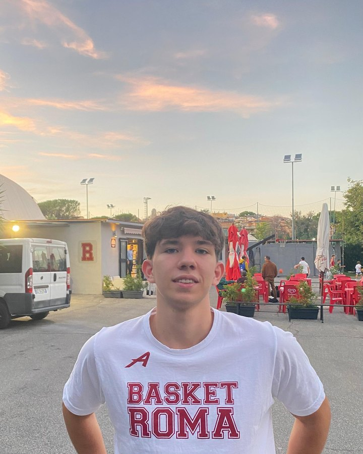

Mi chiamo Andrea Busetto, ho 22 anni e sono di Trieste. Faccio il Social Media Manager per le attività locali: scrivo, giro e monto io ogni contenuto, sul posto, per raccontare quello che rende unica ogni attività.
La mia idea di comunicazione è semplice e la applico a ogni cliente:
le persone non scelgono un prodotto, scelgono chi c'è dietro.
Un panificio non vende pane, vende ottant'anni di famiglia dietro un bancone. Il mio lavoro è far vedere questa storia a chi ancora non la conosce.
Il mio percorso, in breve
Il modo più onesto per capire come lavoro è guardare cosa ho fatto per il Panificio Jerian, con cui collaboro tuttora, ho portato il profilo da 5.000 a oltre 100.000 visualizzazioni al mese senza un euro di pubblicità, facendo arrivare clienti nuovi in negozio. I numeri veri li trovi nel caso studio completo.
Ho iniziato presto e non mi sono fermato.
Prima come Social Media Manager per la società sportiva Basket Roma, gestendo la comunicazione di una realtà che vive di tifo e identità, la palestra migliore possibile per imparare lo storytelling.
Oggi collaboro con Beclay, un'agenzia di comunicazione sportiva, dove mi occupo di social, gestione di siti e LinkedIn aziendali, scrittura di articoli ed eventi. Un lavoro che mi tiene aggiornato e mi permette di crescere accanto a professionisti del settore.
Oggi porto avanti in parallelo la gestione social del Panificio Jerian e la collaborazione con Beclay: due mondi diversi, la stessa cura.
Alle spalle ho anni di lavoro su squadre sportive, aziende e attività locali, ma quello che conta davvero, per te, sono i risultati: concreti, misurabili, verificabili uno per uno.
Perché lavoro solo sul territorio
Potrei gestire social da remoto per attività in tutta Italia. Ho scelto di non farlo. I contenuti che funzionano davvero per un'attività locale nascono dentro l'attività: dalla luce del laboratorio alle sei di mattina, dalle mani di chi impasta, dalle battute con i clienti abituali. Quelle cose non si girano su Zoom.
Per questo lavoro con un numero chiuso di attività a Trieste e in FVG: poche, seguite bene, di persona.